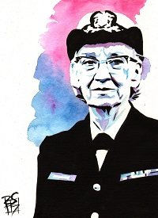
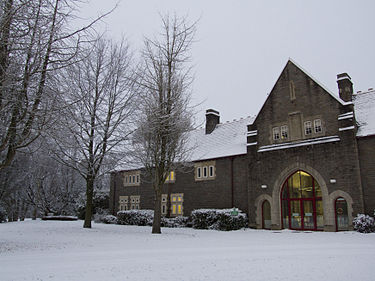

Prior to joining the Navy, Hopper attained a Ph.D. in mathematics from Yale University and was a professor of mathematics at Vassar College. Hopper attempted to enlist in the Navy during World War II but was rejected because she was 34 years old. She instead joined the Navy Reserves. Hopper began her computing career in 1944 when she worked on the Harvard Mark I team led by Howard H. Aiken. In 1949, she joined the Eckert–Mauchly Computer Corporation and was part of the team that developed the UNIVAC I computer. At Eckert–Mauchly she began developing the compiler. She believed that a programming language based on English was possible. Her compiler converted English terms into machine code understood by computers. By 1952, Hopper had finished her program linker (originally called a compiler), which was written for the A-0 System.
In 1954, Eckert–Mauchly chose Hopper to lead their department for automatic programming, and she led the release of some of the first compiled languages like FLOW-MATIC. In 1959, she participated in the CODASYL consortium, which consulted Hopper to guide them in creating a machine-independent programming language. This led to the COBOL language, which was inspired by her idea of a language being based on English words. In 1966, she retired from the Naval Reserve, but in 1967, the Navy recalled her to active duty. She retired from the Navy in 1986 and found work as a consultant for the Digital Equipment Corporation, sharing her computing experiences.
Early Life and Education
Hopper was born in New York City. She was the eldest of three children. Her parents, Walter Fletcher Murray and Mary Campbell Van Horne, were of Scottish and Dutch descent, and attended West End Collegiate Church. Her great-grandfather, Alexander Wilson Russell, an admiral in the US Navy, fought in the Battle of Mobile Bay during the Civil War.
Grace was very curious as a child; this was a lifelong trait. At the age of seven, she decided to determine how an alarm clock worked and dismantled seven alarm clocks before her mother realized what she was doing (she was then limited to one clock). For her preparatory school education, she attended the Hartridge School in Plainfield, New Jersey. Hopper was initially rejected for early admission to Vassar College at age 16 (her test scores in Latin were too low), but she was admitted the following year. She graduated Phi Beta Kappa from Vassar in 1928 with a bachelor's degree in mathematics and physics and earned her master's degree at Yale University in 1930.
In 1934, she earned a Ph.D. in mathematics from Yale under the direction of Øystein Ore. Her dissertation, "New Types of Irreducibility Criteria", was published that same year. Hopper began teaching mathematics at Vassar in 1931 ,and was promoted to associate professor in 1941. She was married to New York University professor Vincent Foster Hopper (1906–1976) from 1930 until their divorce in 1945. She did not marry again, but chose to retain his surname.
Career

Grace Hopper in Computing
Hopper had tried to enlist in the Navy early in World War II. She was rejected for multiple reasons. At age 34, she was too old to enlist, and her weight to height ratio was too low. She was also denied on the basis that her job as a mathematician and mathematics professor at Vassar College was valuable to the war effort. During the war in 1943, Hopper obtained a leave of absence from Vassar and was sworn into the United States Navy Reserve; she was one of many women who volunteered to serve in the WAVES. She had to get an exemption to enlist; she was 15 pounds (6.8 kg) below the Navy minimum weight of 120 pounds (54 kg). She reported in December and trained at the Naval Reserve Midshipmen's School at Smith College in Northampton, Massachusetts. Hopper graduated first in her class in 1944 and was assigned to the Bureau of Ships Computation Project at Harvard University as a lieutenant, junior grade. She served on the Mark I computer programming staff headed by Howard H. Aiken.
UNIVAC
In 1949, Hopper became an employee of the Eckert–Mauchly Computer Corporation as a senior mathematician and joined the team developing the UNIVAC I. Hopper also served as UNIVAC director of Automatic Programming Development for Remington Rand. The UNIVAC was the first known large-scale electronic computer to be on the market in 1950, and was more competitive at processing information than the Mark I.
When Hopper recommended the development of a new programming language that would use entirely English words, she "was told very quickly that [she] couldn't do this because computers didn't understand English." Her idea was not accepted for 3 years, and she published her first paper on the subject, compilers, in 1952. In the early 1950s, the company was taken over by the Remington Rand corporation, and it was while she was working for them that her original compiler work was done. The program was known as the A compiler and its first version was A-0.
In 1952, she had an operational link-loader, which at the time was referred to as a compiler. She later said that "Nobody believed that," and that she "had a running compiler and nobody would touch it. They told me computers could only do arithmetic." She goes on to say that her compiler "translated mathematical notation into machine code. Manipulating symbols was fine for mathematicians but it was no good for data processors who were not symbol manipulators. Very few people are really symbol manipulators. If they are they become professional mathematicians, not data processors. It's much easier for most people to write an English statement than it is to use symbols. So I decided data processors ought to be able to write their programs in English, and the computers would translate them into machine code. That was the beginning of COBOL, a computer language for data processors. I could say "Subtract income tax from pay" instead of trying to write that in octal code or using all kinds of symbols. COBOL is the major language used today in data processing."
Women in Computing
Grace Brewster Murray Hopper (née Murray; December 9, 1906 – January 1, 1992) was an American computer scientist and United States Navy rear admiral. One of the first programmers of the Harvard Mark I computer, she was a pioneer of computer programming who invented one of the first compiler related tools. She popularized the idea of machine-independent programming languages, which led to the development of COBOL, an early high-level programming language still in use today.
Philanthropy

Anthony Hopkins Centre
Hopkins has offered his support to various charities and appeals, notably becoming President of the National Trust's Snowdonia Appeal, raising funds for the preservation of Snowdonia National Park in north Wales. In 1998 he donated £1 million towards the £3 million needed to aid the Trust's efforts in purchasing parts of Snowdon.Prior to the campaign, Hopkins authored Anthony Hopkins' Snowdonia, which was published in 1995.Due to his contributions to Snowdonia, in addition to his film career, in 2004 Hopkins was named among the 100 Welsh Heroes in a Welsh poll.
Hopkins has been a patron of the YMCA centre in his home town of Port Talbot, South Wales for more than 20 years, having first joined the YMCA in the 1950s. He supports other various philanthropic groups. He was a Guest of Honour at a Gala Fundraiser for Women in Recovery, Inc., a Venice, California-based non-profit organisation offering rehabilitation assistance to women in recovery from substance abuse. He is also a volunteer teacher at the Ruskin School of Acting in Santa Monica, California. Hopkins served as the Honorary Patron of The New Heritage Theatre Company in Boise, Idaho from 1997-2007, participating in fundraising and marketing efforts for the repertory theatre
Hopkins contributed toward the refurbishment of a £2.3 million wing at his alma mater, the Royal Welsh College of Music & Drama in Cardiff, named the Anthony Hopkins Centre. It opened in 1999.
Hopkins is a prominent member of environmental protection group Greenpeace and as of early 2008 featured in a television advertisement campaign, voicing concerns about Japan's continuing annual whale hunt.He has also been a patron of RAPt (Rehabilitation for Addicted Prisoners Trust) since its early days and in 1992 helped open their first intensive drug and alcohol rehabilitation unit at Downview (HM Prison), a women’s prison in Surrey, England.
Hopkins is an admirer of the Welsh comedian Tommy Cooper. On 23 February 2008, as patron of the Tommy Cooper Society, he unveiled a commemorative statue in the entertainer's home town of Caerphilly. For the ceremony, he donned Cooper's trademark fez and performed a comic routine.
Honours
year
Name of the Award
Legion of merit
1980
Meritorious Service Medal
American Campaign Medal
1945
World War II Victory Medal
Armed Forces Reserve Medal with two bronze hourglass devices
1953
Naval Reserve Medal
National Defense Service Medal with bronze service star
1967
Defense Distinguished Service Metal
Presidential Medal of Freedom
Dates of Rank
Ensign - December 1943
Lieutenant (junior grade) - June 27, 1944
Lieutenant - January 1, 1946
Lieutenant Commander - April 1, 1952
Commander - July 1, 1957
Retired - December 31, 1966
Recalled to active duty - August 1967
Retired - 1971
Captain - August 2, 1973
Reference
McGee, Russell C. (2004). My Adventure with Dwarfs: A Personal History in Mainframe Computers (PDF). University of Minnesota: Charles Babbage Institute. Retrieved May 7, 2014. Hosted Publications
Lohr, Steve (June 4, 2017). "Jean Sammet, Co-Designer of a Pioneering Computer Language, Dies at 89" – via www.nytimes.com. Software Designer Cobol
Edison to Puskas, November 13, 1878, Edison papers, Edison National Laboratory, U.S. National Park Service, West Orange, N.J., cited in Thomas P. Hughes, American Genesis: A History of the American Genius for Invention, Penguin Books, 1989, ISBN 0-14-009741-4, on page 75.Edison National Lab